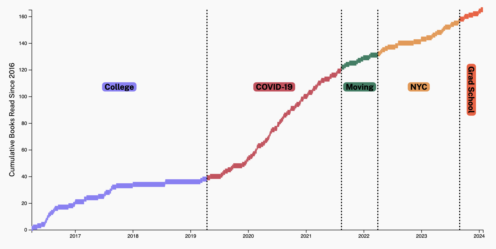
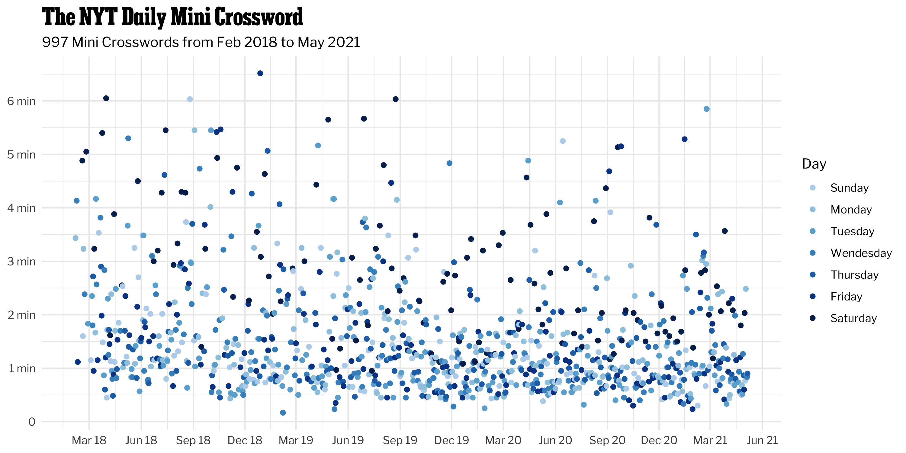

Stories

[DRAFT] My Reading Over the Years
A personal exploration of my reading over the last 8 years.

University Faculty Aren’t Neutral When It Comes to Political Donations
A data journalism piece for The Chicago Maroon.

My Daily Devotion: The NYT Daily Mini Crossword
A person exploration of my NYT Daily Mini Crossword times.